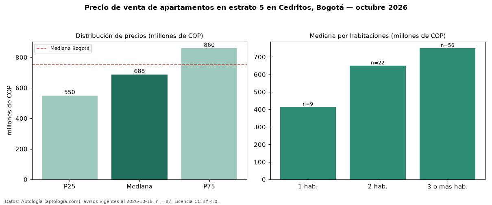

Precio de venta de apartamentos en estrato 5 en Cedritos, Bogotá — octubre 2026
En Cedritos (localidad de Usaquén), Bogotá, la mediana de precio de venta de apartamentos en estrato 5 es COP 688 millones, según 87 avisos vigentes. Eso es 17 % menos que la mediana de toda la vivienda de estrato 5 de Cedritos (COP 830 millones, n = 147); este segmento reúne el 59 % de esos avisos. Por metro cuadrado, la mediana es COP 7,37 millones/m² (n = 87), 6 % por encima del conjunto de referencia (COP 6,97 millones/m²). El área mediana anunciada es 103 m². El segmento con más oferta es el de 3 o más habitaciones (56 avisos, mediana COP 750 millones); pasar de 1 habitación a 3 o más habitaciones cambia la mediana +81 %. La administración mediana declarada es COP 650.000 al mes (n = 74). La mediana de todos los apartamentos en venta de Bogotá es COP 750 millones (−8 % de diferencia). La mitad central de los avisos va de COP 550 millones a COP 860 millones (razón 1,6), una dispersión moderada. Datos: Aptología (aptologia.com), CC BY 4.0 — https://www.aptologia.com/venta/bogota/cedritos. Archivos: PDF, CSV con las cifras y gráfica PNG.

| Avisos únicos | 87 |
|---|---|
| Percentil 25 | COP 550.000.000 |
| Mediana | COP 688.160.000 |
| Percentil 75 | COP 860.000.000 |
| Mediana por m² | COP 7.369.271 |
Fuente: avisos vigentes de portales inmobiliarios recopilados por Aptología, deduplicados (mínimo 30 avisos únicos por celda). Precios pedidos, no cerrados. Fecha: 2026-10-18.